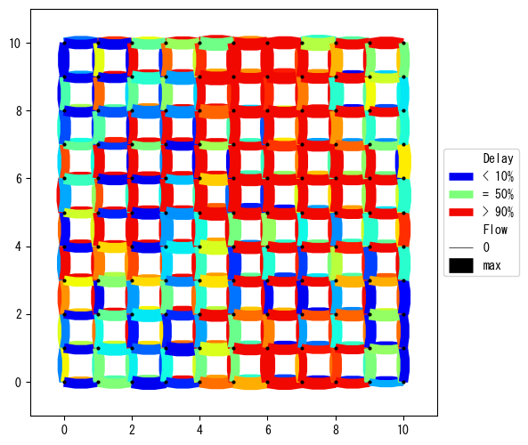
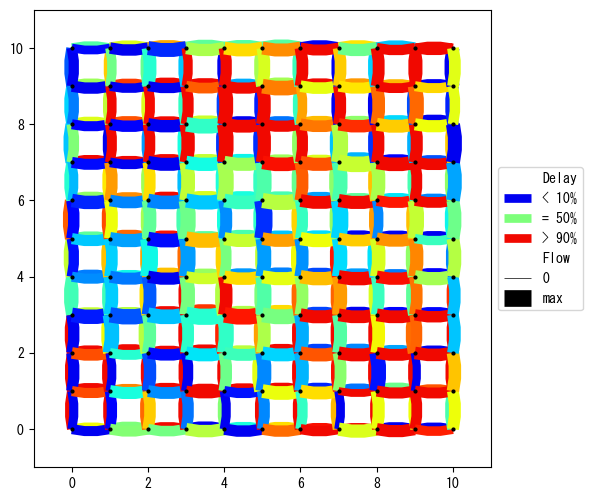
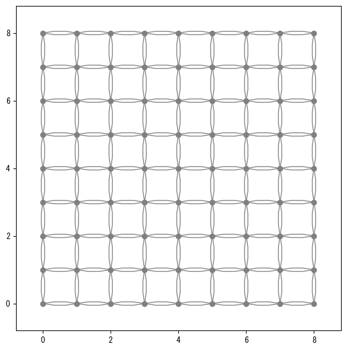
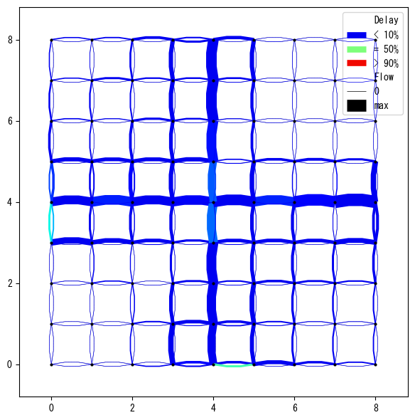
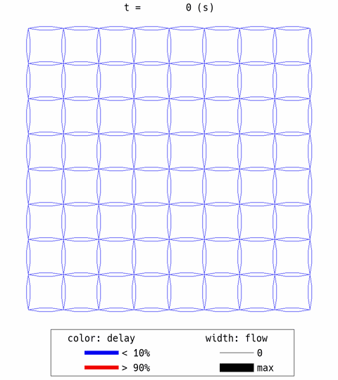
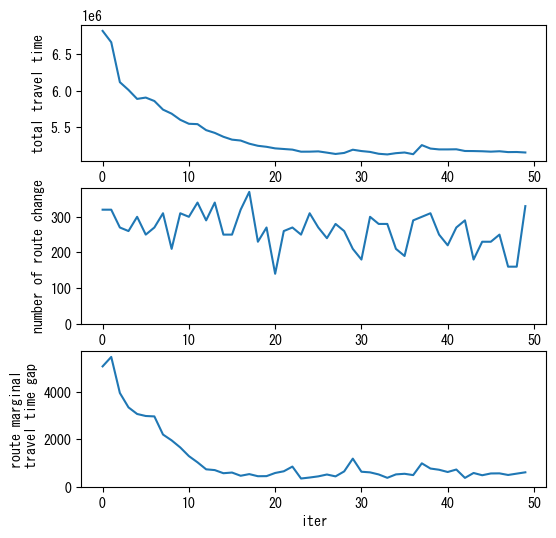

Fast Simulation Mode with the Internal C++ Engine¶
The simulation speed can be significantly accelerated by simply specifying the optional argument cpp=True when defining a World object, as in World(..., cpp=True). With this option, UXsim uses an internal C++ simulation engine instead of the original Python engine. This speeds up the simulation by a factor of roughly 5 to 20, depending on the scenario (the larger the scenario, the greater the speedup). Parallel computation, which further accelerates the simulation by up to 2x, is
also available.
No additional software or libraries need to be installed to use this C++ acceleration feature.
This feature is designed to be almost fully compatible with the original Python mode. Users can use this fast mode just like the original Python mode and will never see or have to deal with any C++ code. For example, simulation scenarios can be defined purely in Python, the results can be analyzed purely in Python, and traffic control can be implemented purely in Python.
However, for unavoidable technical reasons, a few features are incompatible, as listed below:
The
pickle,copy,save_scenario, andload_scenariofeatures of theWorldobject are unavailable or incompatible in C++ mode.User callback functions such as
user_functionof theWorldobject are unavailable in C++ mode.The “taxi” mode is unavailable.
Pseudo-random number generation is not exactly identical between the Python and C++ modes.
Standard usage¶
Here is a large-scale grid network scenario in Python mode.
[6]:
from uxsim import *
# simulation world
W = World(
name="grid_python",
deltan=5,
tmax=7200,
no_cyclic_routing=True,
print_mode=1, show_mode=1,
random_seed=0,
)
# scenario
#automated network generation
#deploy nodes as an imax x jmax grid
imax = 11
jmax = 11
nodes = {}
for i in range(imax):
for j in range(jmax):
nodes[i,j] = W.addNode(f"n{(i,j)}", i, j)
#create links between neighborhood nodes
links = {}
for i in range(imax):
for j in range(jmax):
if i != imax-1:
links[i,j,i+1,j] = W.addLink(f"l{(i,j,i+1,j)}", nodes[i,j], nodes[i+1,j], length=1000, free_flow_speed=20, jam_density=0.2)
if i != 0:
links[i,j,i-1,j] = W.addLink(f"l{(i,j,i-1,j)}", nodes[i,j], nodes[i-1,j], length=1000, free_flow_speed=20, jam_density=0.2)
if j != jmax-1:
links[i,j,i,j+1] = W.addLink(f"l{(i,j,i,j+1)}", nodes[i,j], nodes[i,j+1], length=1000, free_flow_speed=20, jam_density=0.2)
if j != 0:
links[i,j,i,j-1] = W.addLink(f"l{(i,j,i,j-1)}", nodes[i,j], nodes[i,j-1], length=1000, free_flow_speed=20, jam_density=0.2)
#generate traffic demand between the boundary nodes
demand_flow = 0.035
demand_duration = 3600
for n1 in [(0,j) for j in range(jmax)]:
for n2 in [(imax-1,j) for j in range(jmax)]:
W.adddemand(nodes[n2], nodes[n1], 0, demand_duration, demand_flow)
W.adddemand(nodes[n1], nodes[n2], 0, demand_duration, demand_flow)
for n1 in [(i,0) for i in range(imax)]:
for n2 in [(i,jmax-1) for i in range(imax)]:
W.adddemand(nodes[n2], nodes[n1], 0, demand_duration, demand_flow)
W.adddemand(nodes[n1], nodes[n2], 0, demand_duration, demand_flow)
# execute simulation
W.exec_simulation()
# visualize
W.analyzer.print_simple_stats()
W.analyzer.network_average(network_font_size=0, legend_outside=True)
simulation setting:
scenario name: grid_python
simulation duration: 7200 s
number of vehicles: 60500 veh
total road length: 440000 m
timestep size: 5 s
platoon size: 5 veh
number of timesteps: 1440
number of platoons: 12100
number of links: 440
number of nodes: 121
setup time: 0.70 s
simulating...
time| # of vehicles| ave speed| computation time
0 s| 0 vehs| 0.0 m/s| 0.00 s
600 s| 8320 vehs| 10.4 m/s| 1.30 s
1200 s| 15695 vehs| 11.6 m/s| 3.26 s
1800 s| 19015 vehs| 9.9 m/s| 5.51 s
2400 s| 21295 vehs| 8.3 m/s| 7.86 s
3000 s| 24695 vehs| 6.9 m/s| 10.12 s
3600 s| 30140 vehs| 5.6 m/s| 12.15 s
4200 s| 24545 vehs| 6.7 m/s| 14.10 s
4800 s| 16060 vehs| 9.3 m/s| 15.56 s
5400 s| 5660 vehs| 15.6 m/s| 16.46 s
6000 s| 70 vehs| 18.9 m/s| 16.69 s
6600 s| 25 vehs| 18.0 m/s| 16.74 s
7200 s| 5 vehs| 20.0 m/s| 16.78 s
simulation finished
results:
average speed: 9.6 m/s
number of completed trips: 60495 / 60500
total travel time: 101275650.0 s
average travel time of trips: 1674.1 s
average delay of trips: 992.3 s
delay ratio: 0.593
total distance traveled: 923600500.0 m

By simply using cpp=True option in W=World(..., cpp=True), the fast C++ mode can be enabled.
[2]:
from uxsim import *
# simulation world
W = World(
name="grid_cpp",
deltan=5,
tmax=7200,
no_cyclic_routing=True,
print_mode=1, show_mode=1,
random_seed=0,
cpp=True #<- Just this option!
)
# scenario
#automated network generation
#deploy nodes as an imax x jmax grid
imax = 11
jmax = 11
nodes = {}
for i in range(imax):
for j in range(jmax):
nodes[i,j] = W.addNode(f"n{(i,j)}", i, j)
#create links between neighborhood nodes
links = {}
for i in range(imax):
for j in range(jmax):
if i != imax-1:
links[i,j,i+1,j] = W.addLink(f"l{(i,j,i+1,j)}", nodes[i,j], nodes[i+1,j], length=1000, free_flow_speed=20, jam_density=0.2)
if i != 0:
links[i,j,i-1,j] = W.addLink(f"l{(i,j,i-1,j)}", nodes[i,j], nodes[i-1,j], length=1000, free_flow_speed=20, jam_density=0.2)
if j != jmax-1:
links[i,j,i,j+1] = W.addLink(f"l{(i,j,i,j+1)}", nodes[i,j], nodes[i,j+1], length=1000, free_flow_speed=20, jam_density=0.2)
if j != 0:
links[i,j,i,j-1] = W.addLink(f"l{(i,j,i,j-1)}", nodes[i,j], nodes[i,j-1], length=1000, free_flow_speed=20, jam_density=0.2)
#generate traffic demand between the boundary nodes
demand_flow = 0.035
demand_duration = 3600
for n1 in [(0,j) for j in range(jmax)]:
for n2 in [(imax-1,j) for j in range(jmax)]:
W.adddemand(nodes[n2], nodes[n1], 0, demand_duration, demand_flow)
W.adddemand(nodes[n1], nodes[n2], 0, demand_duration, demand_flow)
for n1 in [(i,0) for i in range(imax)]:
for n2 in [(i,jmax-1) for i in range(imax)]:
W.adddemand(nodes[n2], nodes[n1], 0, demand_duration, demand_flow)
W.adddemand(nodes[n1], nodes[n2], 0, demand_duration, demand_flow)
# execute simulation
W.exec_simulation()
# visualize
W.analyzer.print_simple_stats()
W.analyzer.network_average(network_font_size=0, legend_outside=True)
simulation setting:
scenario name: grid_cpp
simulation duration: 7200 s
number of vehicles: 60500 veh
total road length: 440000 m
timestep size: 5 s
platoon size: 5 veh
number of timesteps: 1440
number of platoons: 12100
number of links: 440
number of nodes: 121
setup time: 0.18 s
simulating...
time| # of vehicles| ave speed| computation time
0 s| 0 vehs| 0.0 m/s| 0.00 s
600 s| 8295 vehs| 11.3 m/s| 0.01 s
1200 s| 15570 vehs| 11.2 m/s| 0.04 s
1800 s| 18910 vehs| 9.7 m/s| 0.08 s
2400 s| 21190 vehs| 8.5 m/s| 0.13 s
3000 s| 23615 vehs| 7.5 m/s| 0.18 s
3600 s| 27580 vehs| 6.5 m/s| 0.24 s
4200 s| 21010 vehs| 7.9 m/s| 0.29 s
4800 s| 12795 vehs| 10.8 m/s| 0.33 s
5400 s| 2650 vehs| 18.7 m/s| 0.35 s
6000 s| 30 vehs| 19.2 m/s| 0.35 s
6600 s| 5 vehs| 20.0 m/s| 0.36 s
7200 s| 0 vehs| 0.0 m/s| 0.36 s
simulation finished
results:
average speed: 10.0 m/s
number of completed trips: 60500 / 60500
total travel time: 93333450.0 s
average travel time of trips: 1542.7 s
average delay of trips: 860.9 s
delay ratio: 0.558
total distance traveled: 906945625.0 m

You can see that this is extremely faster than the original Python mode (from 17 sec to 0.4 sec in the original notebook, but these numbers will vary depending on the environments). The simulation results are basically the same, although there are slight discrepancy due to the difference in the random number generators of Python and C++ (for statistical comparison, see the last section of this notebook).
We can also access the internal objects (e.g., Vehicle) of UXsim just like pure Python objects.
[3]:
veh = W.VEHICLES["0"] #get Vehicle instance
print("instance:", veh)
print("type:", type(veh)) #this is actually C++ object
print("orig:", veh.orig) #but, you can access to its variables as in pure-Python mode
print("travel time:", veh.travel_time)
print("travel route:", veh.traveled_route())
instance: <Vehicle 0>
type: <class 'uxsim.uxsim_cpp_wrapper.CppVehicle'>
orig: <Node n(10, 0)>
travel time: 525.0
travel route: (<Route : ['l(10, 0, 9, 0)', 'l(9, 0, 8, 0)', 'l(8, 0, 7, 0)', 'l(7, 0, 6, 0)', 'l(6, 0, 5, 0)', 'l(5, 0, 4, 0)', 'l(4, 0, 3, 0)', 'l(3, 0, 2, 0)', 'l(2, 0, 1, 0)', 'l(1, 0, 0, 0)']>, [np.float64(145.0), np.float64(195.0), np.float64(260.0), np.float64(310.0), np.float64(370.0), np.float64(420.0), np.float64(470.0), np.float64(520.0), np.float64(570.0), np.float64(620.0), np.float64(665.0)])
Furthermore, multi-thread execution is also available for the fast mode by using thread optional arg. About 2x speed up is possible by using thread=4.
[4]:
from uxsim import *
# simulation world
W = World(
name="grid_cpp",
deltan=5,
tmax=7200,
no_cyclic_routing=True,
print_mode=1, show_mode=1,
random_seed=0,
cpp=True, threads=4 #<- Just this option!
)
# scenario
#automated network generation
#deploy nodes as an imax x jmax grid
imax = 11
jmax = 11
nodes = {}
for i in range(imax):
for j in range(jmax):
nodes[i,j] = W.addNode(f"n{(i,j)}", i, j)
#create links between neighborhood nodes
links = {}
for i in range(imax):
for j in range(jmax):
if i != imax-1:
links[i,j,i+1,j] = W.addLink(f"l{(i,j,i+1,j)}", nodes[i,j], nodes[i+1,j], length=1000, free_flow_speed=20, jam_density=0.2)
if i != 0:
links[i,j,i-1,j] = W.addLink(f"l{(i,j,i-1,j)}", nodes[i,j], nodes[i-1,j], length=1000, free_flow_speed=20, jam_density=0.2)
if j != jmax-1:
links[i,j,i,j+1] = W.addLink(f"l{(i,j,i,j+1)}", nodes[i,j], nodes[i,j+1], length=1000, free_flow_speed=20, jam_density=0.2)
if j != 0:
links[i,j,i,j-1] = W.addLink(f"l{(i,j,i,j-1)}", nodes[i,j], nodes[i,j-1], length=1000, free_flow_speed=20, jam_density=0.2)
#generate traffic demand between the boundary nodes
demand_flow = 0.035
demand_duration = 3600
for n1 in [(0,j) for j in range(jmax)]:
for n2 in [(imax-1,j) for j in range(jmax)]:
W.adddemand(nodes[n2], nodes[n1], 0, demand_duration, demand_flow)
W.adddemand(nodes[n1], nodes[n2], 0, demand_duration, demand_flow)
for n1 in [(i,0) for i in range(imax)]:
for n2 in [(i,jmax-1) for i in range(imax)]:
W.adddemand(nodes[n2], nodes[n1], 0, demand_duration, demand_flow)
W.adddemand(nodes[n1], nodes[n2], 0, demand_duration, demand_flow)
# execute simulation
W.exec_simulation()
# visualize
W.analyzer.print_simple_stats()
W.analyzer.network_average(network_font_size=0, legend_outside=True)
simulation setting:
scenario name: grid_cpp
simulation duration: 7200 s
number of vehicles: 60500 veh
total road length: 440000 m
timestep size: 5 s
platoon size: 5 veh
number of timesteps: 1440
number of platoons: 12100
number of links: 440
number of nodes: 121
setup time: 1.70 s
simulating...
time| # of vehicles| ave speed| computation time
0 s| 0 vehs| 0.0 m/s| 0.00 s
600 s| 8295 vehs| 11.3 m/s| 0.01 s
1200 s| 15570 vehs| 11.2 m/s| 0.02 s
1800 s| 18910 vehs| 9.7 m/s| 0.04 s
2400 s| 21190 vehs| 8.5 m/s| 0.06 s
3000 s| 23615 vehs| 7.5 m/s| 0.08 s
3600 s| 27580 vehs| 6.5 m/s| 0.11 s
4200 s| 21010 vehs| 7.9 m/s| 0.13 s
4800 s| 12795 vehs| 10.8 m/s| 0.14 s
5400 s| 2650 vehs| 18.7 m/s| 0.16 s
6000 s| 30 vehs| 19.2 m/s| 0.16 s
6600 s| 5 vehs| 20.0 m/s| 0.16 s
7200 s| 0 vehs| 0.0 m/s| 0.16 s
simulation finished
results:
average speed: 10.0 m/s
number of completed trips: 60500 / 60500
total travel time: 93333450.0 s
average travel time of trips: 1542.7 s
average delay of trips: 860.9 s
delay ratio: 0.558
total distance traveled: 906945625.0 m

Dynamic Traffic Assignment with C++ mode¶
The Dynamic Traffic Assignment (DTA) solvers for DSO and DUE are also accelerated by C++ mode. To use this feature, you need to specify cpp=True option to both of DSOSolver (or DUESolver) and World.
Let’s use the large scale scenario identical to DTA tutorial as an example. This time, we add cpp=True option when defining the World.
[15]:
import uxsim
from uxsim import DTAsolvers
def create_World():
# simulation world
W = uxsim.World(
name="",
deltan=10,
tmax=4800,
duo_update_time=300,
print_mode=0, save_mode=0, show_mode=1,
random_seed=42,
cpp=True #<- this option
)
# scenario
#automated network generation
#deploy nodes as an imax x jmax grid
imax = 9
jmax = 9
id_center = 4
nodes = {}
for i in range(imax):
for j in range(jmax):
nodes[i,j] = W.addNode(f"n{(i,j)}", i, j, flow_capacity=1.6)
#create links between neighborhood nodes
links = {}
for i in range(imax):
for j in range(jmax):
free_flow_speed = 10
if i != imax-1:
if j == id_center:
free_flow_speed = 20
links[i,j,i+1,j] = W.addLink(f"l{(i,j,i+1,j)}", nodes[i,j], nodes[i+1,j], length=1000, free_flow_speed=free_flow_speed)
if i != 0:
if j == id_center:
free_flow_speed = 20
links[i,j,i-1,j] = W.addLink(f"l{(i,j,i-1,j)}", nodes[i,j], nodes[i-1,j], length=1000, free_flow_speed=free_flow_speed)
if j != jmax-1:
if i == id_center:
free_flow_speed = 20
links[i,j,i,j+1] = W.addLink(f"l{(i,j,i,j+1)}", nodes[i,j], nodes[i,j+1], length=1000, free_flow_speed=free_flow_speed)
if j != 0:
if i == id_center:
free_flow_speed = 20
links[i,j,i,j-1] = W.addLink(f"l{(i,j,i,j-1)}", nodes[i,j], nodes[i,j-1], length=1000, free_flow_speed=free_flow_speed)
#generate traffic demand between the boundary nodes
demand_flow = 0.08
demand_duration = 2400
outer_ids = 3
for n1 in [(0,j) for j in range(outer_ids, jmax-outer_ids)]:
for n2 in [(imax-1,j) for j in range(outer_ids,jmax-outer_ids)]:
W.adddemand(nodes[n1], nodes[n2], 0, demand_duration, demand_flow)
for n2 in [(i,jmax-1) for i in range(outer_ids, imax-outer_ids)]:
W.adddemand(nodes[n1], nodes[n2], 0, demand_duration, demand_flow)
for n1 in [(i,0) for i in range(outer_ids, imax-outer_ids)]:
for n2 in [(i,jmax-1) for i in range(outer_ids, imax-outer_ids)]:
W.adddemand(nodes[n1], nodes[n2], 0, demand_duration, demand_flow)
for n2 in [(imax-1,j) for j in range(outer_ids,jmax-outer_ids)]:
W.adddemand(nodes[n1], nodes[n2], 0, demand_duration, demand_flow)
return W
W = create_World()
W.change_print_mode(1)
W.show_network(network_font_size=0)

Then compute Dynamic System Optimum solution by SolverDSO_D2D(..., cpp=True).
You can see that the computation speed is significantly faster than the original Python mode (this result), but the solution is similar (again, not exactly identical due to the stochasticity. For statistical comparison, see the last section).
[16]:
solver_DSO = DTAsolvers.SolverDSO_D2D(create_World, cpp=True)
solver_DSO.solve(max_iter=50)
W_DSO = solver_DSO.W_sol
W_DSO.analyzer.print_simple_stats(force_print=True)
W_DSO.analyzer.network_average(network_font_size=0, legend=True)
W_DSO.analyzer.network_anim(state_variables="flow_speed", figsize=4, animation_speed_inverse=20, timestep_skip=8, detailed=0, network_font_size=0, file_name="out/anim_DSO.gif")
uxsim.display_image_in_notebook("out/anim_DSO.gif")
solver_DSO.plot_convergence()
simulation setting (not finalized):
scenario name:
simulation duration: 4800 s
number of vehicles: 6840 veh
total road length: 288000 m
timestep size: 10 s
platoon size: 10 veh
number of timesteps: 480.0
number of platoons: 684
number of links: 288
number of nodes: 81
setup time: 0.01 s
number of OD pairs: 6480, number of routes: 63097
solving DSO...
iter 0: marginal time gap: 5096.6, potential route change: 5670.0, route change: 320.0, total travel time: 6818000.0, delay ratio: 0.482
iter 1: marginal time gap: 5496.7, potential route change: 5630.0, route change: 320.0, total travel time: 6662600.0, delay ratio: 0.470
iter 2: marginal time gap: 3969.3, potential route change: 5540.0, route change: 270.0, total travel time: 6116700.0, delay ratio: 0.422
iter 3: marginal time gap: 3359.8, potential route change: 5330.0, route change: 260.0, total travel time: 6010400.0, delay ratio: 0.412
iter 4: marginal time gap: 3080.6, potential route change: 5400.0, route change: 300.0, total travel time: 5887700.0, delay ratio: 0.400
iter 5: marginal time gap: 2994.8, potential route change: 5260.0, route change: 250.0, total travel time: 5905900.0, delay ratio: 0.402
iter 6: marginal time gap: 2977.5, potential route change: 5360.0, route change: 270.0, total travel time: 5858800.0, delay ratio: 0.397
iter 7: marginal time gap: 2209.4, potential route change: 5510.0, route change: 310.0, total travel time: 5741100.0, delay ratio: 0.384
iter 8: marginal time gap: 1962.7, potential route change: 5390.0, route change: 210.0, total travel time: 5685800.0, delay ratio: 0.378
iter 9: marginal time gap: 1663.1, potential route change: 5420.0, route change: 310.0, total travel time: 5601900.0, delay ratio: 0.369
iter 10: marginal time gap: 1296.7, potential route change: 5320.0, route change: 300.0, total travel time: 5547400.0, delay ratio: 0.363
iter 11: marginal time gap: 1033.1, potential route change: 5410.0, route change: 340.0, total travel time: 5542600.0, delay ratio: 0.362
iter 12: marginal time gap: 737.0, potential route change: 5580.0, route change: 290.0, total travel time: 5460400.0, delay ratio: 0.353
iter 13: marginal time gap: 704.2, potential route change: 5530.0, route change: 340.0, total travel time: 5422800.0, delay ratio: 0.348
iter 14: marginal time gap: 571.7, potential route change: 5570.0, route change: 250.0, total travel time: 5369700.0, delay ratio: 0.342
iter 15: marginal time gap: 600.1, potential route change: 5430.0, route change: 250.0, total travel time: 5330400.0, delay ratio: 0.337
iter 16: marginal time gap: 464.1, potential route change: 5460.0, route change: 320.0, total travel time: 5318300.0, delay ratio: 0.336
iter 17: marginal time gap: 534.0, potential route change: 5390.0, route change: 370.0, total travel time: 5275200.0, delay ratio: 0.330
iter 18: marginal time gap: 444.7, potential route change: 5480.0, route change: 230.0, total travel time: 5246300.0, delay ratio: 0.326
iter 19: marginal time gap: 448.5, potential route change: 5370.0, route change: 270.0, total travel time: 5232400.0, delay ratio: 0.325
iter 20: marginal time gap: 582.3, potential route change: 5330.0, route change: 140.0, total travel time: 5211000.0, delay ratio: 0.322
iter 21: marginal time gap: 653.8, potential route change: 5340.0, route change: 260.0, total travel time: 5202400.0, delay ratio: 0.321
iter 22: marginal time gap: 852.9, potential route change: 5190.0, route change: 270.0, total travel time: 5193900.0, delay ratio: 0.320
iter 23: marginal time gap: 347.4, potential route change: 5400.0, route change: 250.0, total travel time: 5165600.0, delay ratio: 0.316
iter 24: marginal time gap: 389.4, potential route change: 5340.0, route change: 310.0, total travel time: 5166100.0, delay ratio: 0.316
iter 25: marginal time gap: 438.6, potential route change: 5290.0, route change: 270.0, total travel time: 5170000.0, delay ratio: 0.316
iter 26: marginal time gap: 517.2, potential route change: 5400.0, route change: 240.0, total travel time: 5152800.0, delay ratio: 0.314
iter 27: marginal time gap: 437.8, potential route change: 5370.0, route change: 280.0, total travel time: 5134600.0, delay ratio: 0.312
iter 28: marginal time gap: 648.7, potential route change: 5230.0, route change: 260.0, total travel time: 5148500.0, delay ratio: 0.314
iter 29: marginal time gap: 1189.1, potential route change: 5230.0, route change: 210.0, total travel time: 5192700.0, delay ratio: 0.319
iter 30: marginal time gap: 634.6, potential route change: 5270.0, route change: 180.0, total travel time: 5174400.0, delay ratio: 0.317
iter 31: marginal time gap: 608.1, potential route change: 5290.0, route change: 300.0, total travel time: 5162600.0, delay ratio: 0.315
iter 32: marginal time gap: 520.0, potential route change: 5230.0, route change: 280.0, total travel time: 5137200.0, delay ratio: 0.312
iter 33: marginal time gap: 376.9, potential route change: 5170.0, route change: 280.0, total travel time: 5128200.0, delay ratio: 0.311
iter 34: marginal time gap: 522.2, potential route change: 5220.0, route change: 210.0, total travel time: 5145400.0, delay ratio: 0.313
iter 35: marginal time gap: 547.9, potential route change: 5070.0, route change: 190.0, total travel time: 5154500.0, delay ratio: 0.314
iter 36: marginal time gap: 492.4, potential route change: 5230.0, route change: 290.0, total travel time: 5131300.0, delay ratio: 0.311
iter 37: marginal time gap: 991.0, potential route change: 5150.0, route change: 300.0, total travel time: 5255600.0, delay ratio: 0.328
iter 38: marginal time gap: 770.2, potential route change: 5060.0, route change: 310.0, total travel time: 5208400.0, delay ratio: 0.321
iter 39: marginal time gap: 718.8, potential route change: 5180.0, route change: 250.0, total travel time: 5196800.0, delay ratio: 0.320
iter 40: marginal time gap: 623.6, potential route change: 5220.0, route change: 220.0, total travel time: 5196800.0, delay ratio: 0.320
iter 41: marginal time gap: 728.2, potential route change: 5250.0, route change: 270.0, total travel time: 5198500.0, delay ratio: 0.320
iter 42: marginal time gap: 374.1, potential route change: 5320.0, route change: 290.0, total travel time: 5175200.0, delay ratio: 0.317
iter 43: marginal time gap: 582.0, potential route change: 5150.0, route change: 180.0, total travel time: 5174200.0, delay ratio: 0.317
iter 44: marginal time gap: 486.2, potential route change: 5240.0, route change: 230.0, total travel time: 5171500.0, delay ratio: 0.317
iter 45: marginal time gap: 561.5, potential route change: 5290.0, route change: 230.0, total travel time: 5166100.0, delay ratio: 0.316
iter 46: marginal time gap: 565.7, potential route change: 5130.0, route change: 250.0, total travel time: 5171600.0, delay ratio: 0.317
iter 47: marginal time gap: 497.7, potential route change: 5340.0, route change: 160.0, total travel time: 5160100.0, delay ratio: 0.315
iter 48: marginal time gap: 554.4, potential route change: 5370.0, route change: 160.0, total travel time: 5161300.0, delay ratio: 0.315
iter 49: marginal time gap: 610.1, potential route change: 5220.0, route change: 330.0, total travel time: 5154700.0, delay ratio: 0.314
DSO summary:
total travel time: initial 6818000.0 -> minimum 5128200.0
number of potential route changes: initial 5670.0 -> minimum 5060.0
route marginal travel time gap: initial 5096.6 -> minimum 347.4
computation time: 3.7 seconds
results:
average speed: 12.1 m/s
number of completed trips: 6840 / 6840
total travel time: 5128200.0 s
average travel time of trips: 749.7 s
average delay of trips: 233.1 s
delay ratio: 0.311
total distance traveled: 60247750.0 m



Benchmark and Statistical Comparison¶
Below is a detailed benchmark result obtained with this benchmark code on v1.14.0. The C++ mode is significantly faster, and the results are statistically very similar to those of the Python mode.
Note that the “large” scenario shows low link-level similarity in the per-seed comparison because of the strong symmetry of the network shape (the scenario is inherently chaotic, and bifurcation occurs). Nevertheless, when the average states over multiple seeds are compared, similar results are obtained. This indicates that the two modes are essentially compatible.
Small & Large scenarios (mean ± std, 10 seeds)¶
Scenario |
Mode |
Elapsed (s) |
Total Travel Time |
Average Delay |
Completed Trips |
|---|---|---|---|---|---|
small |
Python |
0.040 ± 0.014 |
118,960 ± 686 |
61.9 ± 0.9 |
735 ± 0 |
small |
C++ |
0.008 ± 0.001 |
119,200 ± 854 |
62.2 ± 1.2 |
735 ± 0 |
large |
Python |
14.859 ± 1.000 |
93,248,782 ± 4,628,559 |
859.9 ± 76.7 |
60,486 ± 16 |
large |
C++ |
0.751 ± 0.149 |
91,721,835 ± 4,754,306 |
834.6 ± 78.7 |
60,487 ± 11 |
DUE/DSO scenario (mean ± std, 10 seeds)¶
Mode |
Total Elapsed (s) |
DUO TTT |
DUE TTT |
DSO TTT |
|---|---|---|---|---|
Python |
70.6 ± 3.4 |
7,149,660 ± 215,605 |
5,858,050 ± 211,236 |
5,308,440 ± 47,607 |
C++ |
7.2 ± 0.4 |
7,299,920 ± 159,439 |
5,958,970 ± 155,729 |
5,280,430 ± 64,398 |
Speedup (Python / C++)¶
small: 5.03x
large: 19.79x
due_dso: 9.77x
C++ threads comparison: threads=1 (default) vs threads=8 (mean ± std, 10 seeds)¶
Scenario |
Threads |
Elapsed (s) |
Total Travel Time |
Speedup vs threads=1 |
|---|---|---|---|---|
small |
1 |
0.008 ± 0.001 |
119,200 ± 854 |
|
small |
8 |
0.008 ± 0.002 |
119,200 ± 854 |
0.94x |
large |
1 |
0.751 ± 0.149 |
91,721,835 ± 4,754,306 |
|
large |
8 |
0.590 ± 0.075 |
91,721,835 ± 4,754,306 |
1.27x |
Link-level accuracy: Python vs C++¶
Per-seed (mean ± std, 10 seeds)¶
Scenario |
Metric |
Corr |
MAE |
|---|---|---|---|
small |
traffic_volume |
0.998 ± 0.005 |
5.00 ± 8.64 |
small |
delay_ratio |
0.868 ± 0.284 |
0.25 ± 0.27 |
large |
traffic_volume |
0.335 ± 0.081 |
290.52 ± 16.75 |
large |
delay_ratio |
0.280 ± 0.080 |
0.37 ± 0.04 |
DUO |
traffic_volume |
0.983 ± 0.002 |
41.94 ± 3.03 |
DUO |
delay_ratio |
0.874 ± 0.026 |
0.13 ± 0.02 |
DUE |
traffic_volume |
0.966 ± 0.011 |
54.42 ± 7.61 |
DUE |
delay_ratio |
0.842 ± 0.019 |
0.13 ± 0.01 |
DSO |
traffic_volume |
0.958 ± 0.006 |
63.76 ± 5.28 |
DSO |
delay_ratio |
0.762 ± 0.040 |
0.14 ± 0.02 |
Seed-averaged (10-seed mean vs 10-seed mean)¶
Scenario |
Metric |
Corr |
MAE |
|---|---|---|---|
small |
traffic_volume |
1.000 |
3.00 |
small |
delay_ratio |
0.990 |
0.09 |
large |
traffic_volume |
0.845 |
89.17 |
large |
delay_ratio |
0.817 |
0.12 |
DUO |
traffic_volume |
0.998 |
14.50 |
DUO |
delay_ratio |
0.983 |
0.06 |
DUE |
traffic_volume |
0.996 |
20.40 |
DUE |
delay_ratio |
0.981 |
0.06 |
DSO |
traffic_volume |
0.995 |
22.07 |
DSO |
delay_ratio |
0.972 |
0.06 |